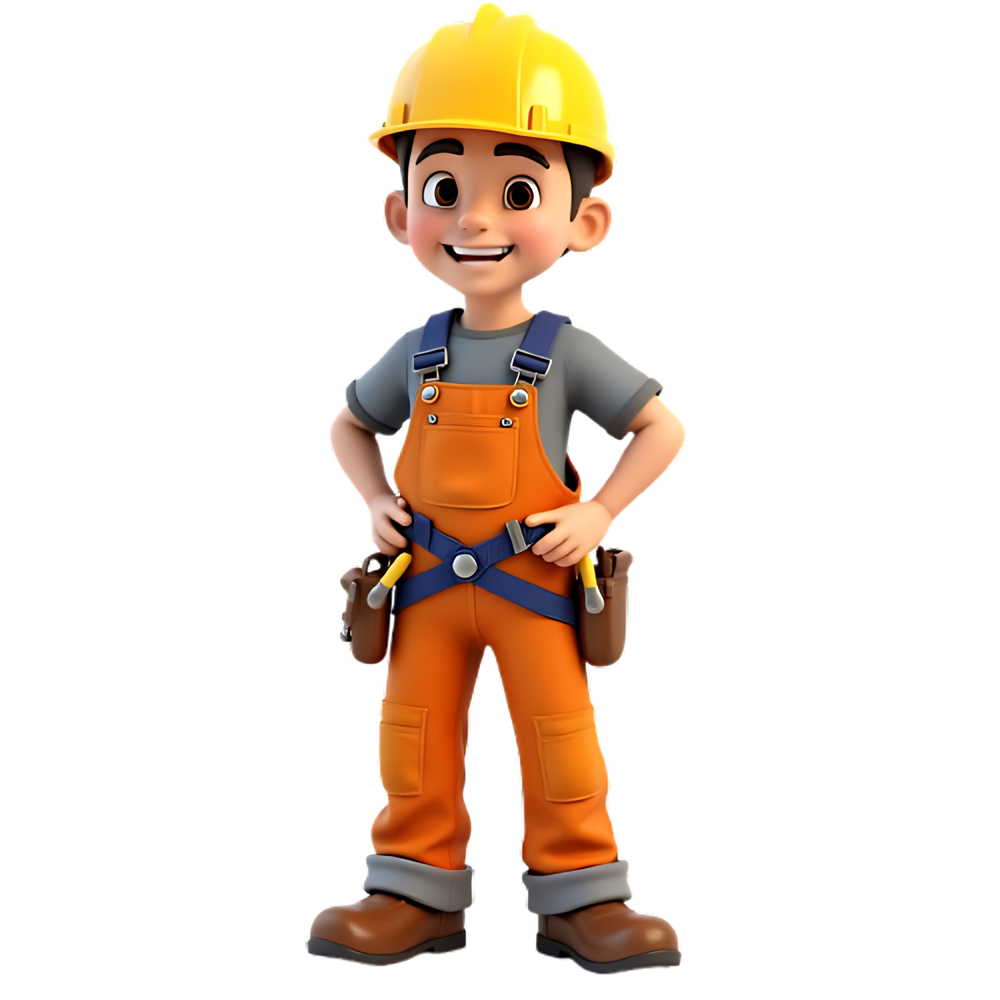

Bem vindo ao começo do seu futuro

Centro Federal de Educação Technológica de Minas Gerais
Como Tudo Começou

O CEFET-MG nem sempre teve a estrutura gigante que conhecemos hoje. Essa história de dedicação ao ensino começou a ser desenhada há mais de um século, mais precisamente em 1910, com a criação da antiga Escola de Aprendizes Artífices de Minas Gerais.
Nas primeiras décadas, o foco era a formação profissional básica, mas a instituição sempre acompanhou o ritmo do desenvolvimento industrial e tecnológico do país. Ao longo dos anos, ela se transformou em Escola Técnica Nacional, depois na famosa Escola Técnica Federal de Minas Gerais (ETFMG) e, finalmente, em 1978, conquistou o status de Centro Federal de Educação Tecnológica. Cada laboratório e cada corredor dos campi de Belo Horizonte carregam o legado de milhares de alunos e professores que passaram por aqui.
Hoje em Dia
Atualmente, o CEFET-MG se consolidou como uma das maiores e mais respeitadas instituições de ensino do Brasil, sendo amplamente recomendada por profissionais do mercado tanto pelas suas graduações quanto pelo ensino médio técnico.
Com nota máxima no MEC e diversos prêmios de inovação e tecnologia na bagagem, a instituição se destaca pela alta empregabilidade de seus formandos e pela forte produção científica. Entrar por essas portas hoje significa ter acesso a laboratórios de ponta, projetos de extensão incríveis e uma comunidade acadêmica vibrante. O CEFET-MG transforma dedicação em excelência — e agora, o próximo capítulo dessa trajetória de sucesso é você quem escreve!
A Entrada
Conquistar uma vaga no CEFET-MG é o objetivo de milhares de estudantes todos os anos, o que torna o seu processo seletivo um dos mais concorridos e respeitados de Minas Gerais. Para o ensino médio técnico, a entrada acontece por meio de um exame anual próprio, enquanto o ingresso na graduação é feito principalmente pelo SiSU, utilizando a nota do Enem.
Independentemente do caminho escolhido, vencer essa seleção exige muita dedicação e foco nos estudos. Por isso, cruzar as portas dos campi de Belo Horizonte como aluno oficial carrega um significado enorme: é a recompensa de um esforço genuíno e o início de uma trajetória que abre portas para o mundo inteiro. Sinta orgulho de estar aqui, pois você mereceu essa vaga. Seja muito bem-vindo!